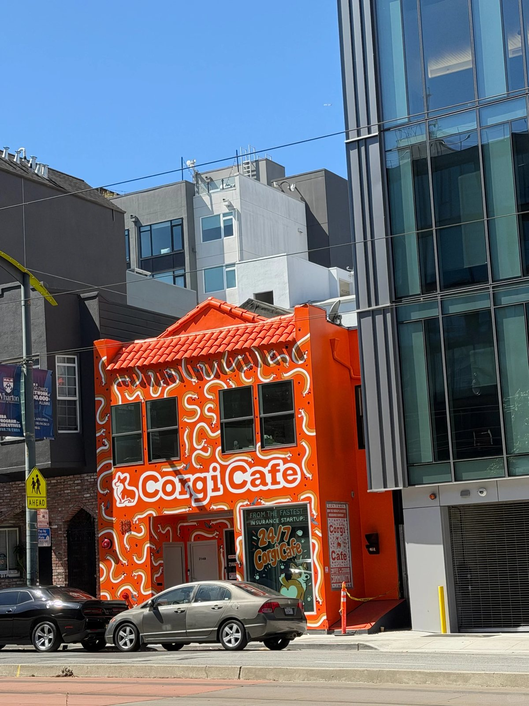
产业创新 × 美好生活，一同生长
Embodied AI Harbor × Bay City Metropolis
成熟都市能级与滨海公共空间，叠加具身智能产业集聚——宝中成为创新成果展示与资源连接的开放舞台。
具身智能产业创新聚集区
2026年5月8日，“宝智链新”前海·宝安人工智能产业发展大会上正式发布“具身智能港”，定位是具有国际影响力的具身智能产业创新引领区。
港内已集聚超139家具身智能上下游企业，覆盖算力、感知大模型、核心零部件到整机。
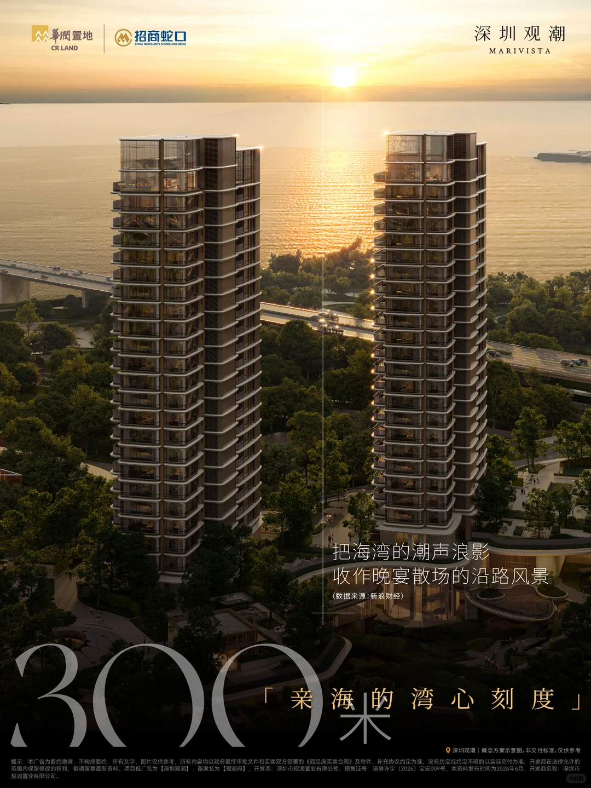
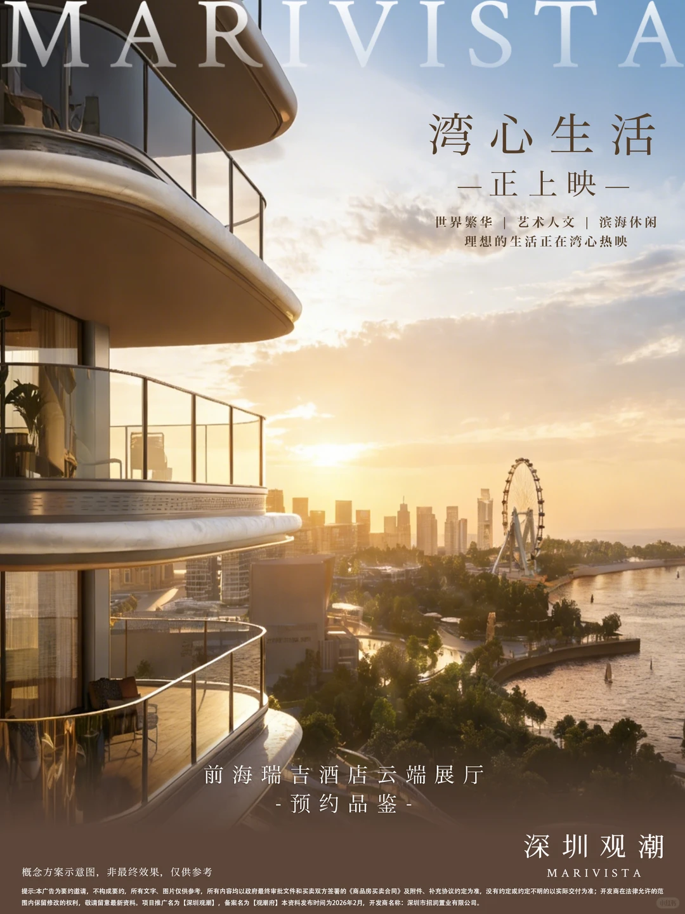
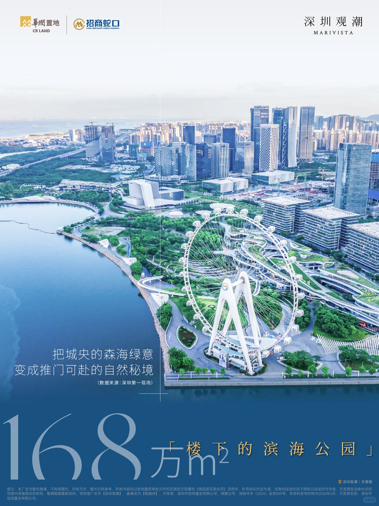
成熟的商务、文体、商业与滨海公共空间基础，叠加具身智能等新兴产业发展动向——宝安中心区应当成为创新成果展示与资源连接的开放舞台，与满足顶尖科创人才美好生活的第一居所。
Super-Individual Incubator × Trendy Lanes & Alleys
街巷肌理与低成本空间，是超级个体与 OPC 来深创业的第一落脚点。
AI降低知识获取、工具使用、创造能力与组织成本的门槛，超级个体/组织与 OPC 正在崛起——低成本弹性产业空间，应对加速迭代的企业生长周期。
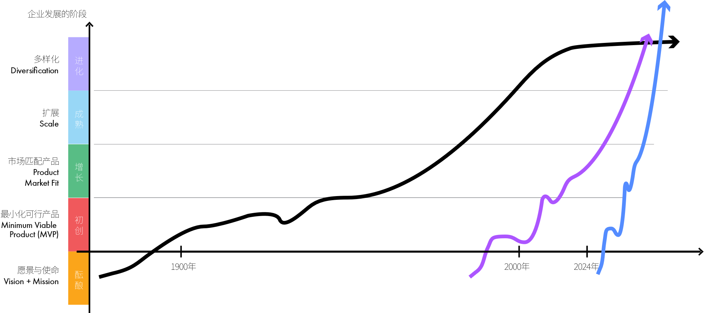
新安拥有多样尺度的街巷空间，既有城中村的市井小巷，也有现代的林荫主街。街巷及转角空间丰富，较高的连通性为街道空间带来更多活力，同时也使街道具备更强的改造更新潜力。
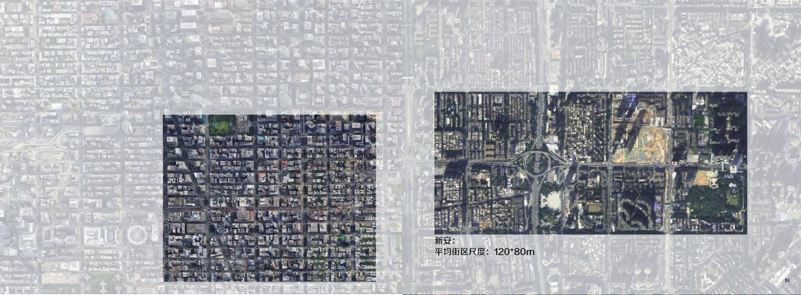
策略：通过对低成本空间的微更新，形成适合当代年轻群体生活生产方式的创新空间，成为超级个体/组织来深创业的第一落脚点。
低成本创意、创业与居住空间的持续供给，是吸引年轻创意群体与微型企业的主要途径，也是激发城市创新与降低创业风险的空间载体。结合城中村与厂房有机更新，未来创业路沿线将提供多处低成本创业空间，形成源源不断吸引创意人才的磁场。
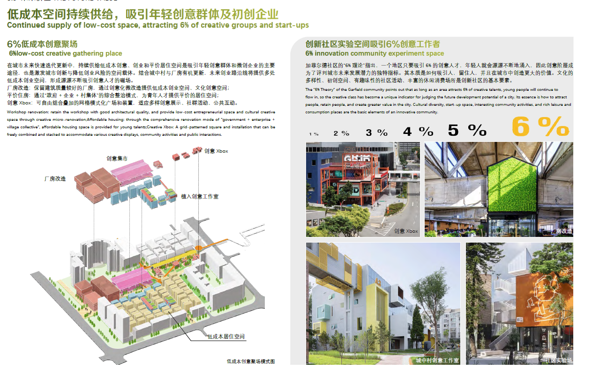
加菲尔德社区的“6%理论”指出：一个地区只要吸引 6% 的创意人才，年轻人就会持续涌入，“创意阶层”成为评判城市未来发展潜力的独特指标。本质是如何吸引人、留住人，并在城市中创造更大价值。
文化多样性、初创空间、有趣味性的社区活动、丰富的休闲消费场所——创新社区的基本要素。
现状城中村多为单一租赁化住房（10–20㎡简易单身宿舍为主）。未来人口结构与居住需求变化，将驱动混合化街区——满足创新、成套化改造与商业服务等多元需求。
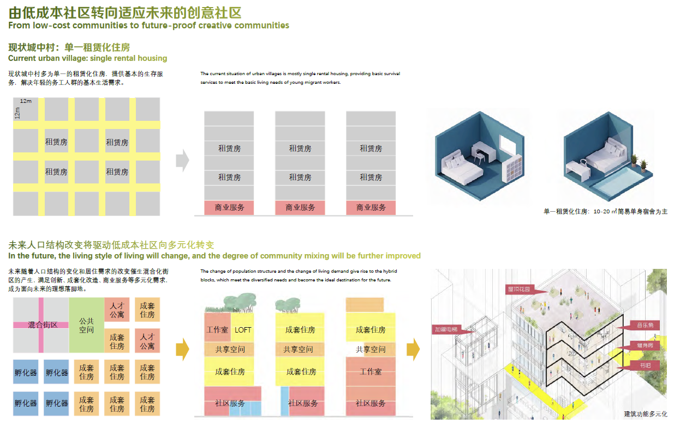
混合街区 · 公共空间 · 人才公寓 · 成套住房 · 孵化器 · 工作室 LOFT · 社区服务
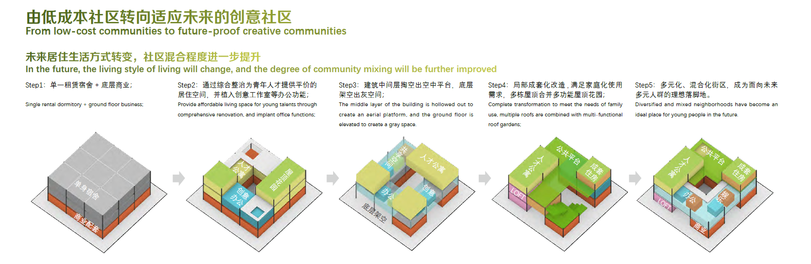
未来居住生活方式转变，社区混合程度进一步提升
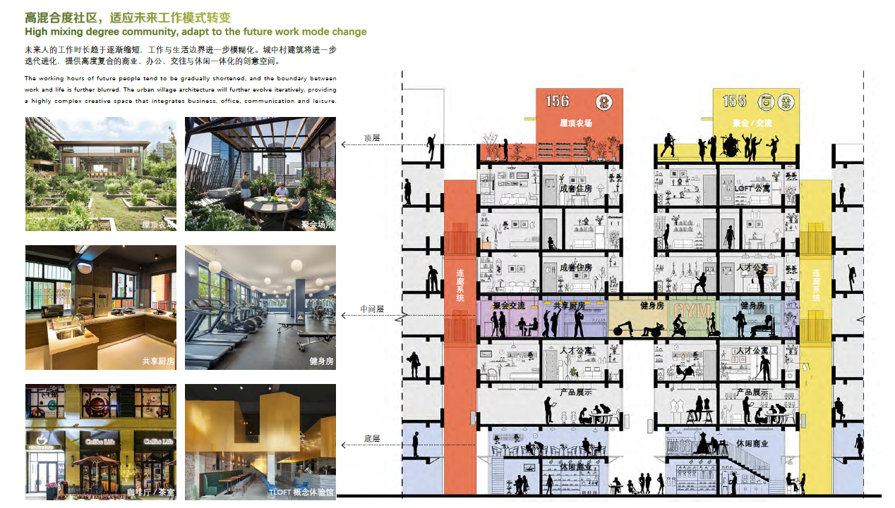
屋顶农场 · 聚会场所 · 共享厨房 · 健身房 · 咖啡厅 · LOFT — 工作与生活边界模糊化

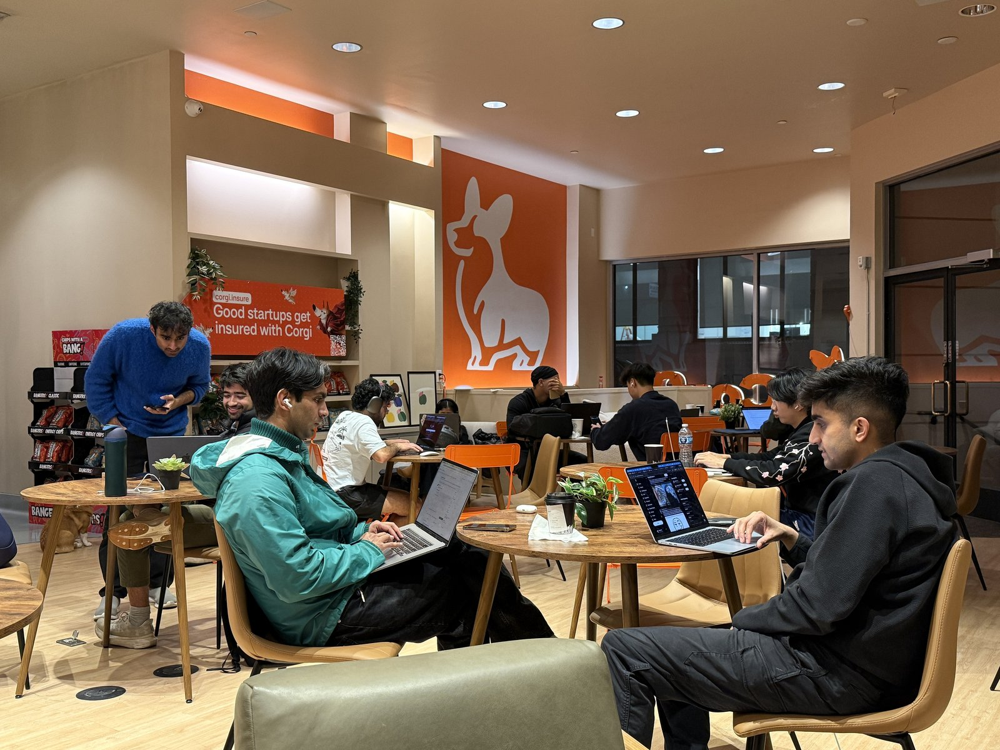
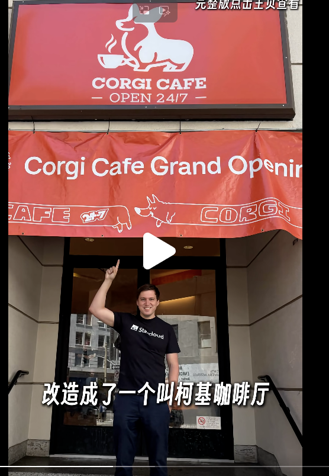
最近在 SF 非常火爆的低成本创新业态——Corgi Cafe。AI 原生保险初创 Corgi 租下 FiDi 空间后，把一层做成全天候咖啡馆，上层为公司办公；一层聚集 OPC、独立开发者与 founder，现场即为创业保险的入口与品牌界面。
对我们的启示：低成本第三空间可以同时是创新发生地与产业服务接口——灵芝道街巷可映射为「一层磁吸社群 + 上层弹性办公 + 桌上式服务产品」。
Sources: corgicafe.com · PR Newswire 2026-02-17 · SF Gazetteer. 外立面保留 Kit 现场帧；室内用公开宣传图。
而这里的街巷可以成为各具特色的、可以逛的目的地系统，希望为更加多元的人群提供日常美好生活的目的地——我们把这个体系归纳为：街 · 巷 · 道。
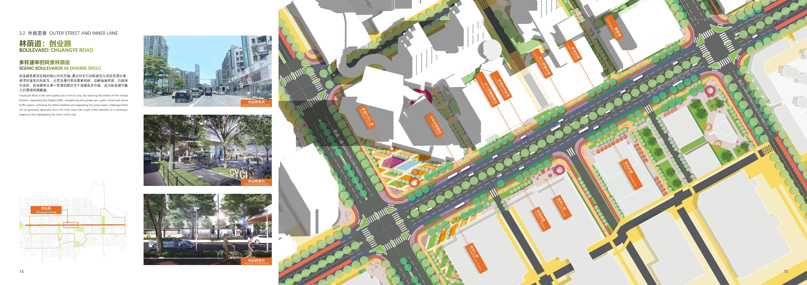
多样速率的风景林荫道
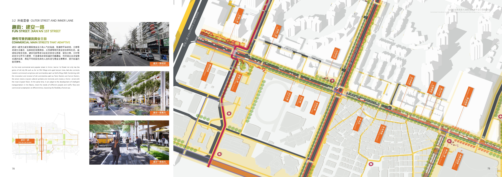
弹性可变的潮流商业街
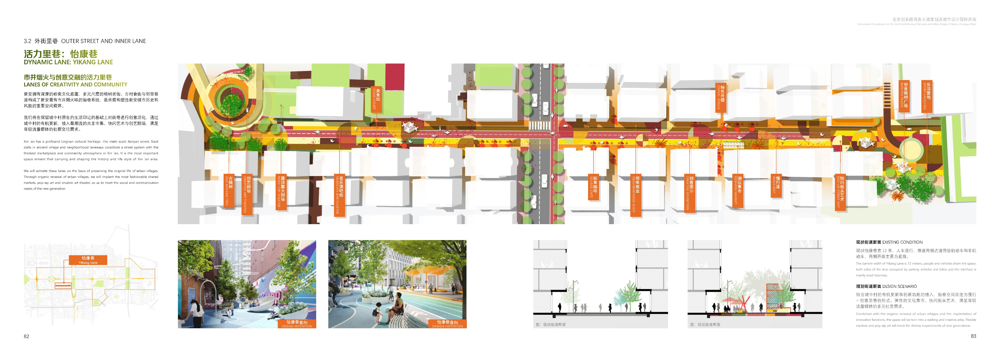
市井烟火与创意交融的活力里巷
Intelligent Terminal Innovation Park × GBA Talent Retreat
山城地理资源与科创园区并置——以强运营与美好生活系统承接人才与产业。
尖岗山啤酒小镇（雪花科创城 · 兴东附近）沿创业二路 / 留仙走廊东连留仙洞总部基地，再南向衔接在建西丽高铁综合枢纽——串起职住与南山科创通勤。
示意廊道（参考 image36）。西丽枢纽取高铁站工地区位，勿与地铁西丽站混淆。底图 Esri World Imagery · WGS84。
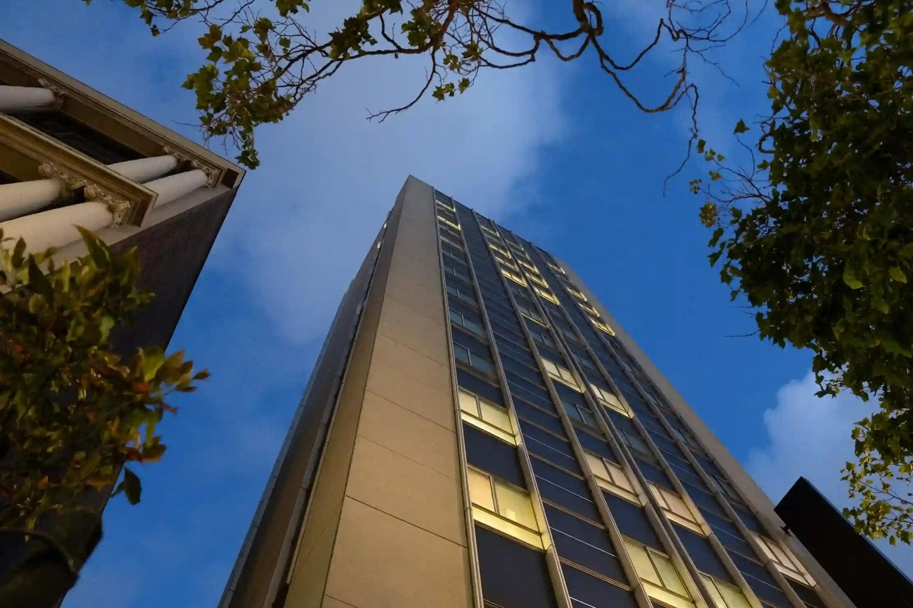
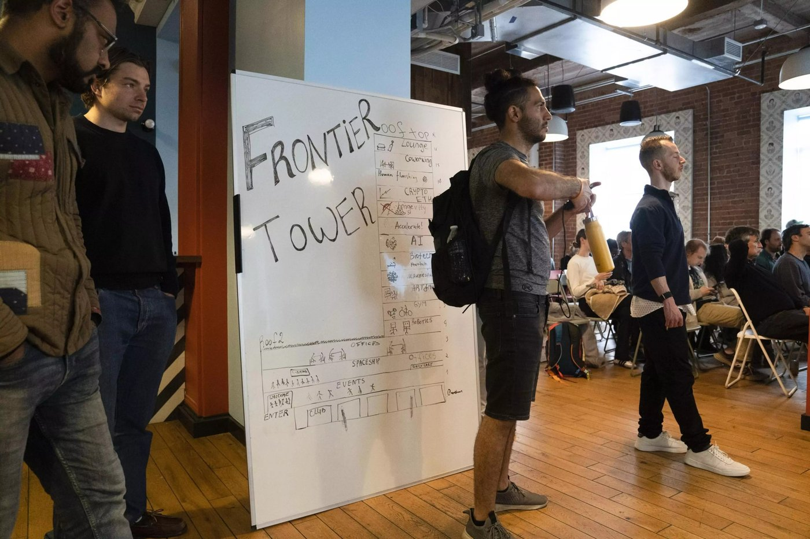
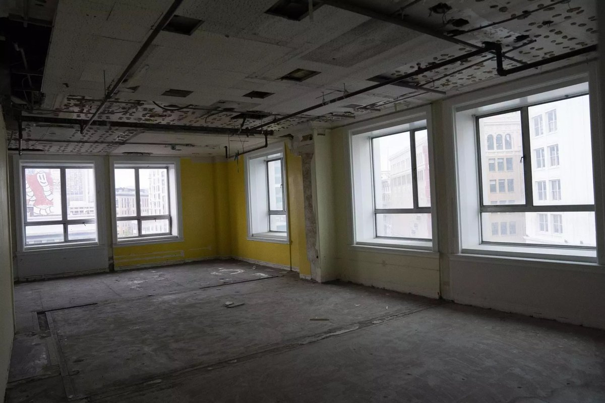
将空置写字楼产品化为会员制「垂直村」：主题楼层、共享实验室、高频活动与 citizenship——用运营密度替代单纯物业出租。
Sources: frontiertower.io · SF Standard 2025-05-18 · xyz.city. 图片 xyz.city / SF Standard（内部汇报）。
山水环绕的景观资源应该被放大——能不能延伸上山，植入更多户外体验节点，将啤酒小镇打开，并用完整生活系统把人留到雪花科创城。
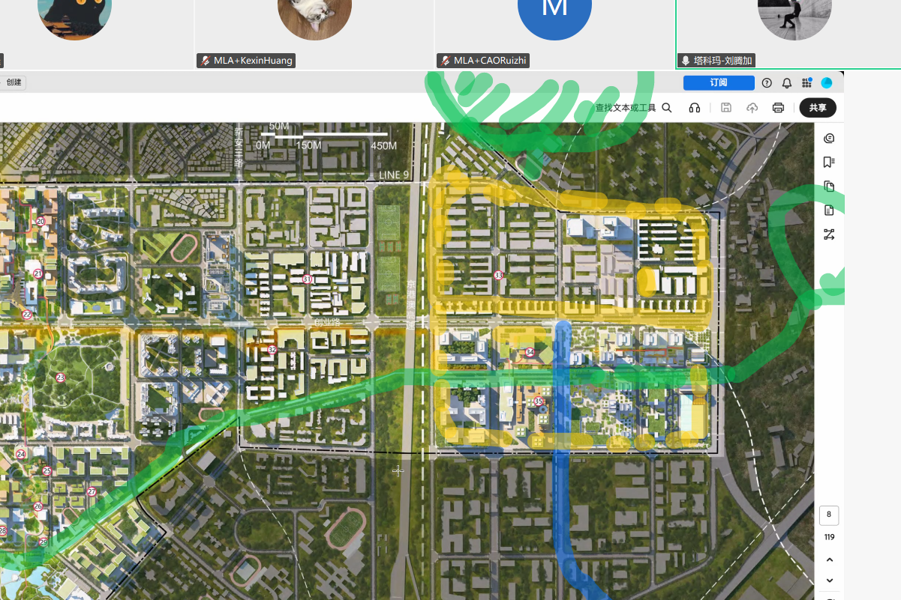
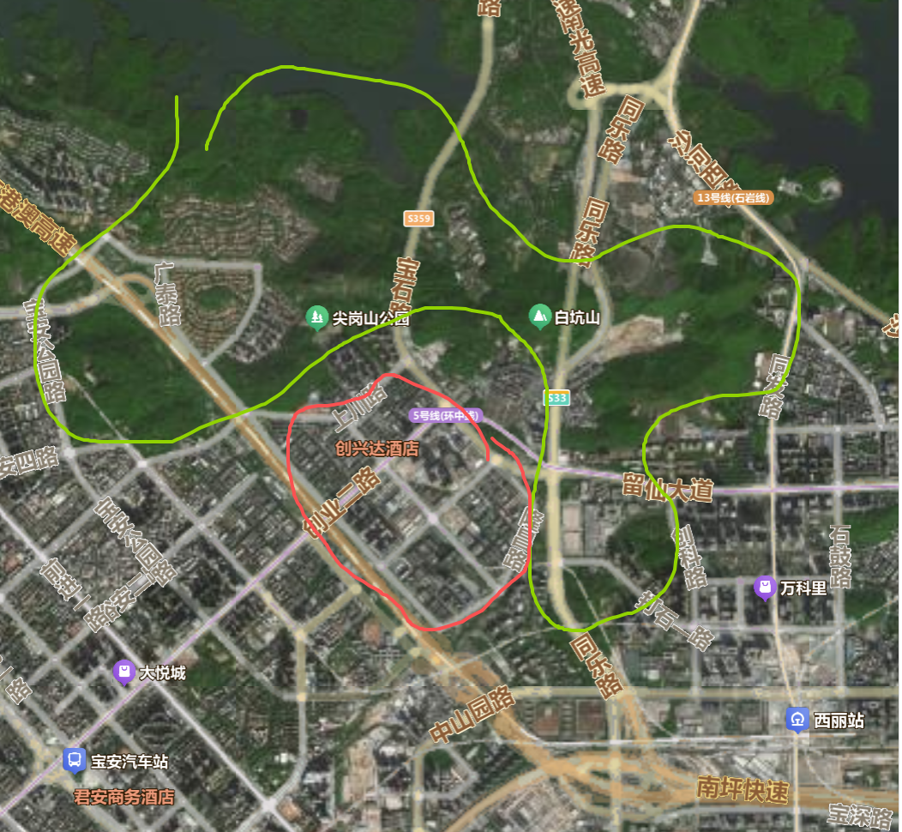
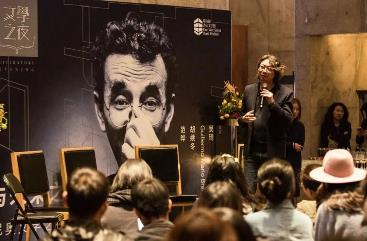
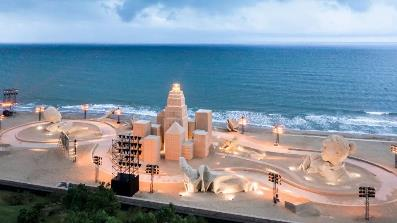
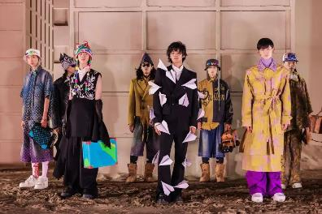
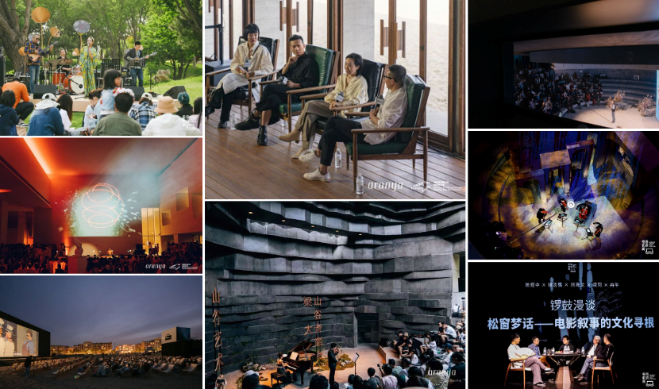
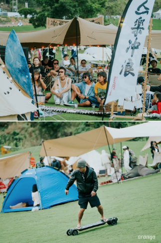
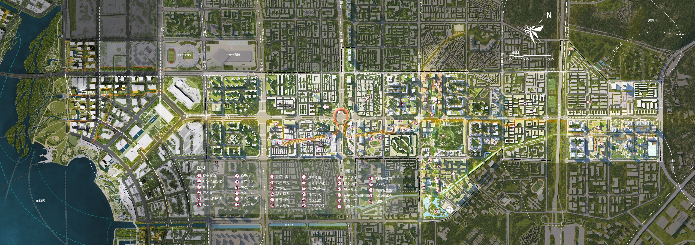